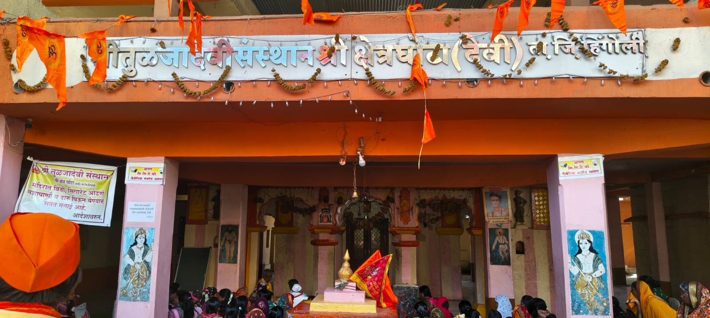
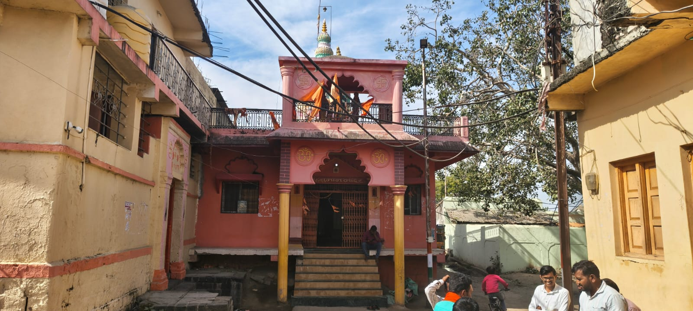
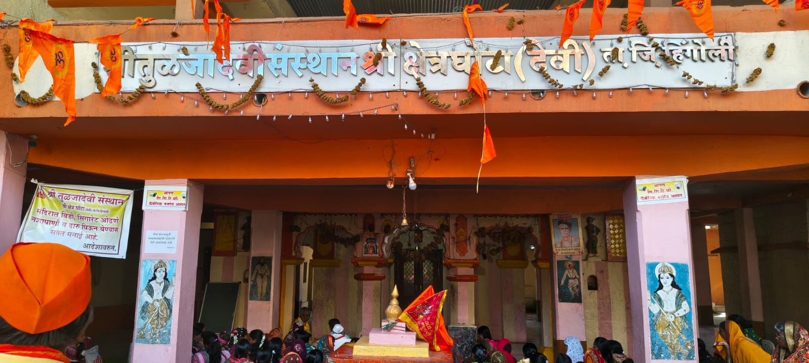
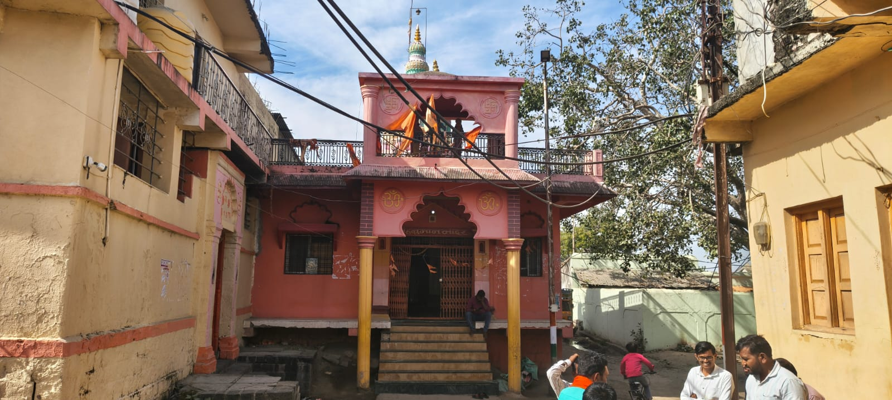

🏡 गावाचा इतिहास
घोटा (देवी) हे महाराष्ट्र राज्यातील हिंगोली जिल्ह्यातील हिंगोली तालुक्यात वसलेले एक पारंपरिक व कृषिप्रधान गाव आहे. गावाचे प्रशासन स्थानिक ग्रामपंचायतीमार्फत चालते. गावातील बहुतांश नागरिक शेती व शेतीपूरक व्यवसायावर अवलंबून असून पिकउत्पादन हे गावाच्या अर्थव्यवस्थेचे मुख्य आधारस्तंभ आहे.
२०११ च्या जनगणनेनुसार घोटा (देवी) गावाची लोकसंख्या सुमारे १४०० आहे. गावातील सामाजिक रचना सुसंवादी असून नागरिकांमध्ये परस्पर सहकार्य, सामाजिक ऐक्य व सामूहिक निर्णय घेण्याची परंपरा आहे. सण-उत्सव, धार्मिक कार्यक्रम व सामाजिक उपक्रम सामूहिक सहभागातून साजरे केले जातात.
सन १९७५ साली घोटा (देवी) ग्रामपंचायतीची स्थापना झाली. स्थापनेपासून आजपर्यंत ग्रामपंचायतीच्या माध्यमातून स्वच्छता अभियान, पाणीपुरवठा व्यवस्था, अंतर्गत रस्ते, सार्वजनिक सुविधा, शालेय व अंगणवाडी सहाय्य तसेच विविध मूलभूत सेवा राबविण्यात आल्या आहेत.
पर्यावरण संवर्धनाच्या दृष्टीने वृक्ष लागवड, जलसंधारण कामे, स्वच्छता व कचरा व्यवस्थापन यावर विशेष भर देण्यात आला आहे. नागरिकांचा लोकसहभाग हे गावाच्या विकासाचे प्रमुख वैशिष्ट्य मानले जाते.
गावाच्या विकासामध्ये शिक्षण व आरोग्य विषयक सुविधांना देखील महत्त्व देण्यात आले आहे. प्राथमिक शिक्षण, अंगणवाडी सेवा तसेच आरोग्यविषयक जनजागृती कार्यक्रमांच्या माध्यमातून नागरिकांच्या जीवनमानात सुधारणा करण्याचा प्रयत्न करण्यात येत आहे.
डिजिटल युगाशी सुसंगत राहण्यासाठी ग्रामपंचायतीमार्फत ऑनलाइन सेवा, नोंदणी प्रक्रिया, प्रमाणपत्र वितरण तसेच माहिती तंत्रज्ञानाचा वापर वाढविण्यावर भर देण्यात आला आहे. ग्रामसभा, लोकसहभाग व पारदर्शक प्रशासन यांच्या माध्यमातून घोटा (देवी) गाव मुख्यमंत्री समृद्ध पंचायतराज अभियानांतर्गत सुशासन व शाश्वत विकासाच्या दिशेने सातत्याने प्रगती करत आहे.
 


